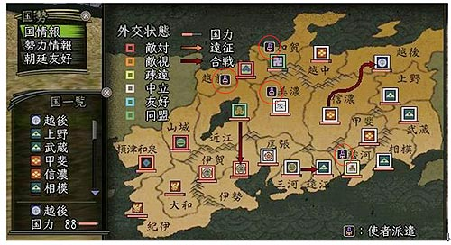
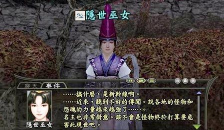

大名昇進任務
■大名昇進任務
1、玩家可以進行官位昇進，當然大名也可以官位的昇進。依據所屬大名的「官位」，決定玩家可晉升的「官位」上限。
2、大名的「官位」會依所屬勢力的支配國數目，以及與朝廷的友好度多寡來決定。
因為玩家可以獲得與所屬勢力之大名官位的 4 個等級差之官位，為了提高自己最高可以昇進的官位，必須幫自己所屬之大名提高官位。
3、與朝廷間的友好度，可依向「朝廷傳令兵」進貢進行提升動作。
4、與朝廷友好度可於「國勢」指令中進行確認。當達到一定值，會有朝廷派來的使者，進而發生「大名晉升任務」。
其中與朝廷的友好度可以藉由給朝廷取次役特定物品來上升，與朝廷友好度可以在國勢選單裡進行確認。
特定物品為「無法個人交易」的物品為限，但是天下一品以及不傳授外人之物品除外。
5、「大名晉升任務」為多人進行的任務，可與友好關係以上勢力的玩家，共同達成困難的任務。
6、達成任務後，於次週的維修過後，大名的「官位」將會上升。
7、備註：當足利家於二條城發起復興戰的那一週，因為無法進入京都，則無法與「 勸修寺晴豐」對話。
■大名官位升進條件
大名官位 |
所有國數 |
正六位上 |
0 |
從五位上、下 |
1 |
正五位上、下 |
2 |
從四位下 |
3 |
從四位上 |
4 |
正四位下 |
5 |
正四位上 |
6 |
從三位 |
7 |
正三位 |
8 |
從二位 |
9 |
正二位 |
10 |
從一位 |
11 |
正一位 |
12 |
■可以獻上的道具 < 進貢物 >
‧獻上物品的條件是不可交易的裝備品。（ 活動的?備不可獻上）
‧ 部隊物品，各身份取得的部隊物品所增加的友好度也會有所差異
「與力 31 、侍大將 44 、目付 59 、奉行 76 、中老 95 、家老 116 （鐵砲之類的有一部分除外）
‧獻上後自己的名聲也會上升
■關於確認「大名晉升」任務發生的方法
自己所屬勢力發生「大名晉升」任務時，在登入時的情勢視窗當中會出現該訊息。
另外，「勢力」的「朝廷」指令的勢力圖中，該勢力會出現官位記號。

■關於參加方法
與發生「大名晉升」任務的勢力為友好關係以上勢力所屬的玩家，
可於發生「大名晉升」任務勢力的據點的城當中的 NPC 「隱世巫女」說話，就可移動至特殊地圖「妖魔陣」當中。

■關於任務
此任務為靠著多數玩家的合作，打倒 NPC 即可達成的大規模任務。
於「妖魔陣」當中，充滿著怪物，也準備了許多機關。
關於任務的解法，位於「妖魔陣」當中的 NPC 「隱世修驗者」將會告知玩家此任務的解法。
<<關於「妖魔陣」介紹請按此>>
|